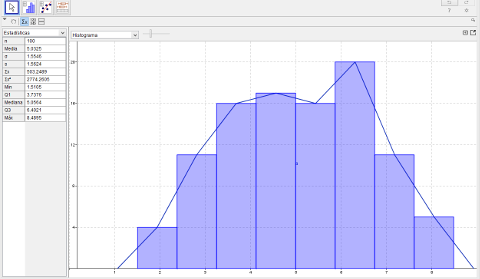

Al finalizar la etapa de recolección de datos en campo es necesario realizar una agrupación de datos en la cual los mismos se conforman en conjuntos delimitados por un máximo y mínimo de clase.
El procedimiento para establecer las clases consiste en una serie de pasos que se detallarán a continuación:
Una vez se tiene la tabla de distribución de frecuencias incluyendo la frecuencia de clase se proceda a elaborar la gráfica determinando en el eje horizontal del plano cartesiano los límites de clase hallados, cada par consecutivo de límites formará la base de un rectángulo cuya altura será igual a la fecuencia de la clase correspondiente
